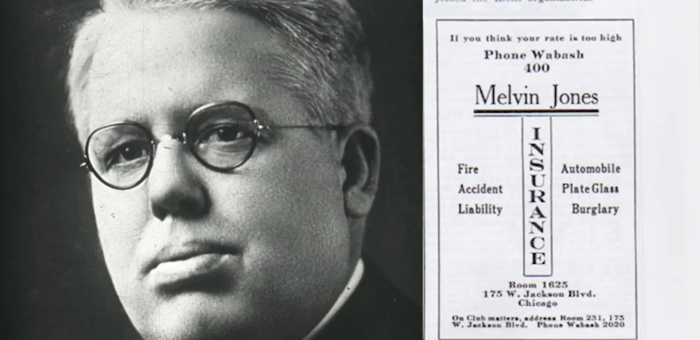
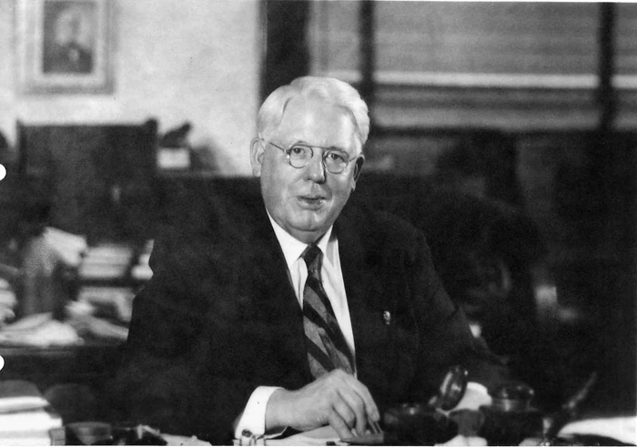

La Fundación Lions Clubs International (LCIF) apoya y financia
proyectos sociales que mejoran la calidad de vida de las personas y
fortalecen las comunidades.
Trabaja junto con los Clubes de Leones, voluntarios y aliados para
llegar a las poblaciones vulnerables, promover la salud, apoyar la
educación, atender emergencias y fomentar la inclusión y la paz.
Antes de que hubiera más de 1,4 millones de Leones por todo el
mundo, hubo un hombre con una gran visión. Un hombre de negocios
de Chicago, Illinois, EE.UU., llamado Melvin Jones, que impulsado
por una personalidad dinámica y un gran corazón, ayudó a crear un
movimiento de servicio que 100 años después todavía sigue
creciendo.
+1,4 millonesde Leones en todo el mundo
100 añosde un movimiento que sigue creciendo

Melvin Jones
Melvin Jones era soñador, muy emprendedor y pragmático. Era un
vendedor enérgico y extrovertido que en su tiempo libre leía a
Shakespeare. ¿Qué mejor hombre para fundar la mayor asociación
de clubes de servicios?
En 1958, la Junta Directiva Internacional de nuestra asociación
designó oficialmente a Jones como el fundador de los clubes de
Leones, más de cuatro décadas después de que los clubes de
Leones celebraran su primera reunión. Pero, independientemente
de cuál fuera su título oficial, el impacto de Jones en los
Leones ha sido de gran alcance. Él proporcionó el liderato, la
capacidad organizativa, la tenacidad y el músculo necesario que
permitió que la Asociación Internacional de Clubes de Leones
llegara a ser lo que es hoy.
Jones nació el 13 de enero de 1879 en Fort Thomas, Arizona, un
puesto de vigilancia del ejército estadounidense, donde su padre
era centinela. Cuando tenía 7 años, toda la familia se trasladó
a Illinois. Dotado con una excelente voz de tenor, consideró
seguir una carrera musical, pero cambió de opinión y se hizo
vendedor de seguros.
Para el año 1913, Jones había formado su propia agencia de
seguros. Cuando ingresó en un club para hombres de negocios de
Chicago, llamado Business Circle, tomó la iniciativa de reclutar
a nuevos socios y de persuadir a los antiguos socios a que
volvieran a unirse al grupo. Pero el hecho de que el club
estuviera enfocado exclusivamente en los negocios no agradó a
Jones, cuya visión era diferente, más amplia.
Jones se preguntó: ¿qué sucedería si estos hombres exitosos por
su empuje, inteligencia y ambición pusieran todo su talento al
servicio de las comunidades en las que viven? Imaginó un nuevo
tipo de club con el deseo de ayudar a los demás.
Como secretario del club de negocios, con la ayuda de su esposa,
la campeona de golf Rose Amanda Freeman, escribió decenas de
cartas a clubes de todo el país invitándolos a adoptar su idea
de una organización centrada en el servicio. Los empresarios
interesados en afiliarse se reunieron en Chicago, Illinois y el
7 de junio de 1917 nació la Asociación de Clubes de Leones.
Más adelante ese año, en la convención inaugural en Dallas,
Texas, Jones fue elegido secretario-tesorero, un título que
ostentó durante muchos años. Llegado el momento, la Junta
Directiva le concedió el título de secretario general de por
vida.
Jones fue un escritor prolífico que podía ser claro y
contundente en ocasiones, y sentimental en otras. Se nota su
influencia en los documentos de fundación como son los Objetivos
de los clubes de Leones y el código de ética. Sus artículos en
la revista LION, que todavía se citan hoy en día, ayudaron a
articular los principios y valores de la organización.

También le encantaban los aforismos. Jones, que nunca fue
partidario de disfrazar la verdad, tenía un dicho favorito
enmarcado cuidadosamente en su oficina: “La verdad y las rosas tienen espinas”.
Jones abandonó el negocio de seguros para convertirse en el
director general de facto y embajador mundial de buena voluntad
de los Leones. Jugó ambos papeles espléndidamente, desarrollando
y administrando las operaciones de una sede en expansión y
viajando constantemente para visitar a los clubes y dar
conferencias. Nunca redujo el ritmo.
Club de Leones Quibdó, Chocó
17 feb 1956Fecha de fundación de nuestro club
22ciudadanos fundadores, en su mayoría comerciantes y
médicos
Nuestro Club fue fundado el 17 de febrero de 1956 por un grupo de 22
ciudadanos, en su mayoría comerciantes y médicos. Desde su fundación
hemos servido incansablemente a nuestros hermanos que lo necesitan
en Quibdó y el departamento del Chocó, por medio de proyectos:
🩺
Salud
En sus inicios la labor social estuvo orientada a ofrecer
servicios de salud, lo cual es comprensible si se tiene en
cuenta el recurso humano con que disponía.
Construcción de centros de salud en Puerto Conto y Barrio
Obrero
Brigadas de salud
Campañas para la prevención de la diabetes
Prevención de la ceguera
En el hospital San Francisco de Asís de Quibdó, se atendía un
centro de recuperación nutricional para niños
📚
Educación
Construcción de la Escuela Melvin Jones, en el Barrio El Jardín,
en donde se desarrolla el programa Leones Educando, a través del
cual se les enseña a los niños habilidades y destrezas para el
éxito diario, y otros servicios.
Misión
Transformar vidas mediante la solidaridad, el servicio
voluntario y el apoyo a iniciativas con impacto positivo y
duradero.
Visión
Ser una comunidad fuerte, unida y solidaria en Quibdó y el
Chocó, donde nadie quede sin apoyo.